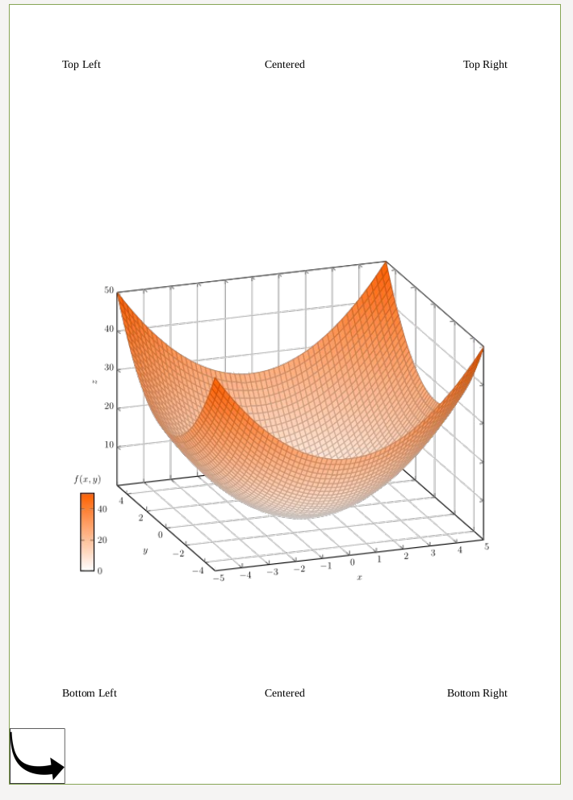
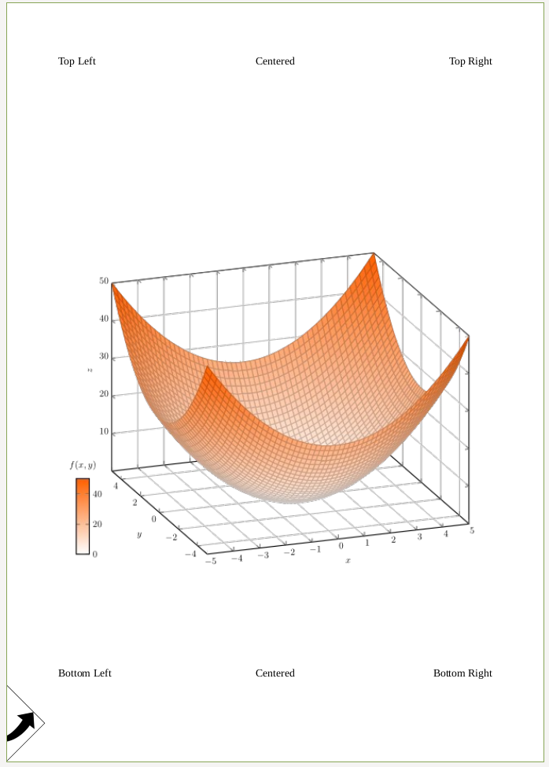
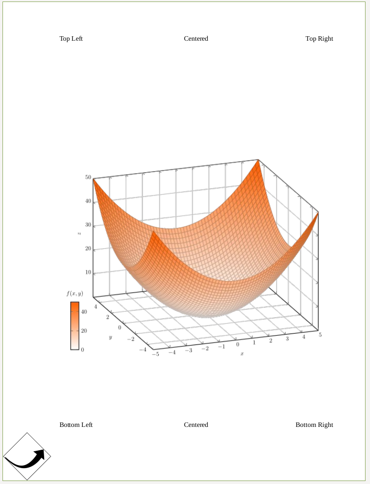
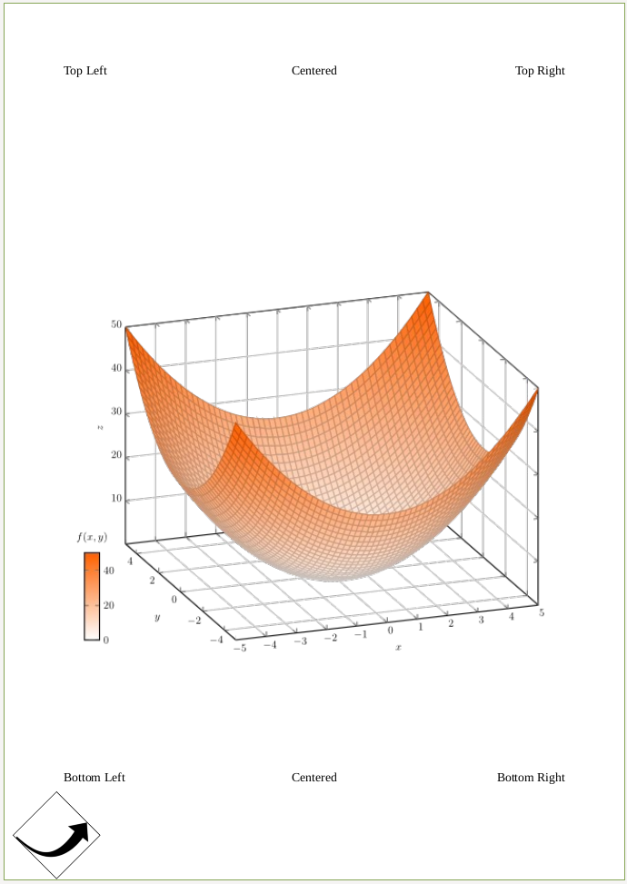
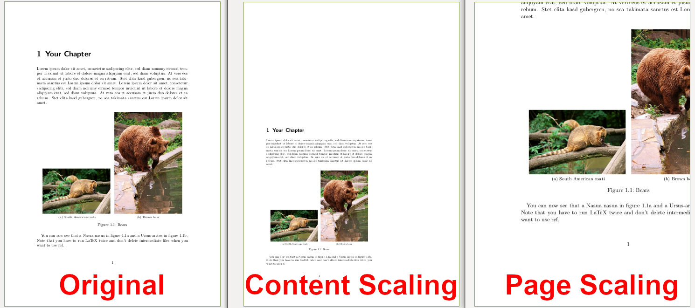
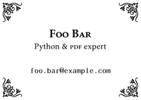
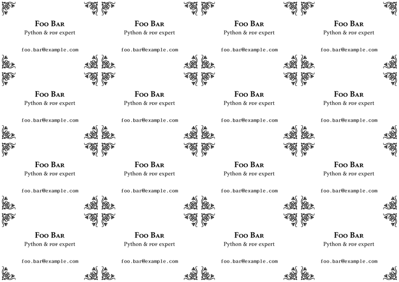

裁剪和转换 PDF¶
备注
仅仅因为内容不再可见，并不意味着它已被删除。 裁剪是通过调整视图框来实现的。这意味着被裁剪掉的内容仍然可以恢复。
from pypdf import PdfReader, PdfWriter
reader = PdfReader("example.pdf")
writer = PdfWriter()
# 将 reader 的第 1 页添加到输出文档中，保持不变。
writer.add_page(reader.pages[0])
# 将 reader 的第 2 页添加，但顺时针旋转 90 度。
writer.add_page(reader.pages[1].rotate(90))
# 将 reader 的第 3 页添加，但裁剪为一半大小。
page3 = reader.pages[2]
page3.mediabox.upper_right = (
page3.mediabox.right / 2,
page3.mediabox.top / 2,
)
writer.add_page(page3)
# 写入 pypdf-output.pdf。
with open("pypdf-output.pdf", "wb") as fp:
writer.write(fp)
页面旋转¶
最典型的旋转是顺时针旋转页面 90 度的倍数。这通常用于页面方向错误的情况。您可以使用 rotate() 方法进行旋转：
from pypdf import PdfReader, PdfWriter
reader = PdfReader("input.pdf")
writer = PdfWriter()
writer.add_page(reader.pages[0])
writer.pages[0].rotate(90)
with open("output.pdf", "wb") as fp:
writer.write(fp)
通常，推荐使用 rotate 方法而不是 page.add_transformation(Transformation().rotate()) 方法，因为 rotate 会确保页面仍然位于 mediabox/cropbox 内。转换对象操作的是页面内容的坐标，并不会改变 mediabox 或 cropbox。
普通合并¶

是以下代码的结果：
from pypdf import PdfReader, PdfWriter, Transformation
# 获取数据
reader_base = PdfReader("labeled-edges-center-image.pdf")
page_base = reader_base.pages[0]
reader = PdfReader("box.pdf")
page_box = reader.pages[0]
page_base.merge_page(page_box)
# 将结果写回
writer = PdfWriter()
writer.add_page(page_base)
with open("merged-foo.pdf", "wb") as fp:
writer.write(fp)
合并并旋转¶

from pypdf import PdfReader, PdfWriter, Transformation
# 获取数据
reader_base = PdfReader("labeled-edges-center-image.pdf")
page_base = reader_base.pages[0]
reader = PdfReader("box.pdf")
page_box = reader.pages[0]
# 应用变换
transformation = Transformation().rotate(45)
page_box.add_transformation(transformation)
page_base.merge_page(page_box)
# 写回结果
writer = PdfWriter()
writer.add_page(page_base)
with open("merged-foo.pdf", "wb") as fp:
writer.write(fp)
如果你添加 expand 参数：
transformation = Transformation().rotate(45)
page_box.add_transformation(transformation)
page_base.merge_page(page_box, expand=True)
你将得到：

另外，你也可以通过使用以下代码将合并的图像稍微向右移动：
op = Transformation().rotate(45).translate(tx=50)

缩放¶
pypdf 提供了两种缩放方式：页面本身的缩放和页面内容的缩放。 通常，你希望同时使用这两种方式。

缩放页面（画布）¶
from pypdf import PdfReader, PdfWriter
# 读取输入
reader = PdfReader("resources/side-by-side-subfig.pdf")
page = reader.pages[0]
# 缩放
page.scale_by(0.5)
# 将结果写入文件
writer = PdfWriter()
writer.add_page(page)
writer.write("out.pdf")
如果你希望有更多控制权，可以直接调整各种页面框：
from pypdf.generic import RectangleObject
mb = page.mediabox
page.mediabox = RectangleObject((mb.left, mb.bottom, mb.right, mb.top))
page.cropbox = RectangleObject((mb.left, mb.bottom, mb.right, mb.top))
page.trimbox = RectangleObject((mb.left, mb.bottom, mb.right, mb.top))
page.bleedbox = RectangleObject((mb.left, mb.bottom, mb.right, mb.top))
page.artbox = RectangleObject((mb.left, mb.bottom, mb.right, mb.top))
缩放内容¶
内容是相对于坐标系的原点进行缩放的。通常，这个原点是左下角。
from pypdf import PdfReader, PdfWriter, Transformation
# 读取输入
reader = PdfReader("resources/side-by-side-subfig.pdf")
page = reader.pages[0]
# 缩放
op = Transformation().scale(sx=0.7, sy=0.7)
page.add_transformation(op)
# 将结果写入文件
writer = PdfWriter()
writer.add_page(page)
writer.write("out-pg-transform.pdf")
pypdf._page.MERGE_CROP_BOX¶
pypdf<=3.4.0 版本以前，合并页面时使用 trimbox。
pypdf>3.4.0 版本改变了这一行为，改为使用 cropbox。
如果有人有充分的理由继续使用或期望 trimbox，请通过以下方式联系我：
info@martin-thoma.de 或通过 GitHub 链接。
在此期间，您可以添加以下代码来恢复旧行为：
pypdf._page.MERGE_CROP_BOX = "trimbox"
转换同一页面的多个副本¶
我们设计了以下名片（A8 格式），用于宣传我们新成立的公司。

我们希望将此卡片复制十六次到一张 A4 页面上，以便打印、裁剪并分发给所有朋友。通过了解 {func}~pypdf._page.PageObject.merge_page方法和Transformation 类后，我们运行了以下代码。请注意，我们必须调整源页面的媒体框，使其扩展，这在某些情况下已成为一种不太优雅的解决方案。
from pypdf import PaperSize, PdfReader, PdfWriter, Transformation
# 读取源文件
reader = PdfReader("nup-source.pdf")
sourcepage = reader.pages[0]
# 创建目标文件，并添加空白页
writer = PdfWriter()
destpage = writer.add_blank_page(width=PaperSize.A4.height, height=PaperSize.A4.width)
# 扩展源页面的媒体框
sourcepage.mediabox = destpage.mediabox
# 将源页面复制到目标页面，重复多次
for x in range(4):
for y in range(4):
# 平移页面
sourcepage.add_transformation(
Transformation().translate(
x * PaperSize.A8.height,
y * PaperSize.A8.width,
)
)
# 合并平移后的页面
destpage.merge_page(sourcepage)
# 写入文件
with open("nup-dest1.pdf", "wb") as fp:
writer.write(fp)
结果是… 意外的。
问题在于，运行 add_transformation() 方法多次后，这些变换是叠加的：例如，十六个变换都应用到了源页面的最后一个副本，因此大部分名片都在目标页面之外。
我们需要一种方法来合并已变换的页面，而不修改源页面。于是 {func}~pypdf._page.PageObject.merge_transformed_page` 方法派上了用场。使用此方法：
我们不再需要第一次尝试中的媒体框黑客；
变换仅应用一次。
from pypdf import PaperSize, PdfReader, PdfWriter, Transformation
# 读取源文件
reader = PdfReader("nup-source.pdf")
sourcepage = reader.pages[0]
# 创建目标文件，并添加空白页
writer = PdfWriter()
destpage = writer.add_blank_page(width=PaperSize.A4.height, height=PaperSize.A4.width)
# 将源页面复制到目标页面，重复多次
for x in range(4):
for y in range(4):
destpage.merge_transformed_page(
sourcepage,
Transformation().translate(
x * sourcepage.mediabox.width,
y * sourcepage.mediabox.height,
),
)
# 写入文件
with open("nup-dest2.pdf", "wb") as fp:
writer.write(fp)
我们得到了预期的结果。

当然，仍然有一些工作需要做，例如在名片之间和周围添加边距，但这留给读者作为练习…